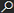

EDI konektor základ - nastavení
Nastavení EDI konektoru se skládá z obecné karty Nastavení EDI, číselníku Partneři EDI, jednotlivých karet EDI komunikace a z doplňujících polí na kartách zákazníků, dodavatelů, adres příjemce a adres objednávek. Doporučené pořadí kroků je stejné jako pořadí kapitol níže.
Nastavení EDI
- Vyberte ikonu

, zadejte Nastavení EDI a poté vyberte související odkaz. - Zaškrtněte pole Povoleno. Bez zaškrtnutí tohoto pole nelze žádnou funkci EDI spustit – systém ohlásí, že funkčnost EDI konektoru není povolena.
- Do pole EAN zadejte EAN (GLN) vlastní společnosti, kterým se firma identifikuje v EDI komunikaci.
- Podle potřeby vyplňte ostatní pole:
| Pole | Popis |
|---|---|
| Archivovat nákupní doklady | Určuje, zda se mají nákupní doklady při EDI zpracování archivovat. |
| Archivovat prodejní doklady | Určuje, zda se mají prodejní doklady při EDI zpracování archivovat. |
| Mez DPH | Hodnota, podle které se při zpracování přijaté zprávy rozlišuje základní a snížená sazba DPH. |
| Výchozí sazba DPH % | Výchozí základní sazba DPH použitá při zpracování zprávy. |
| Výchozí snížená sazba DPH % | Výchozí snížená sazba DPH použitá při zpracování zprávy. |
| Povolit stejné nastavení EDI pro více zákazníků | Umožní na kartě EDI komunikace ponechat prázdné Číslo původu. Takové nastavení se pak použije pro všechny zákazníky daného EDI partnera, kteří nemají vlastní specifické nastavení. |
Partneři EDI
Partner EDI je zastřešující označení protistrany, pod kterou se sdružují jednotlivé karty EDI komunikace.
- Vyberte ikonu , zadejte Partneři EDI a poté vyberte související odkaz.
- Zvolte akci Nový a vyplňte pole Kód a Popis.
Nastavení karet EDI komunikace
Karta EDI komunikace je jádrem celého nastavení. Určuje, který doklad se pro kterého partnera, kterým objektem a jakým směrem zpracovává. Otevřete ji ze stránky Přehled nastavení EDI komunikací (akce Nový nebo otevření existujícího řádku).
Klíč záznamu tvoří kombinace polí Kód partnera EDI, Typ původu, Číslo původu, Kód příjemce / adresy objednávky, Typ původu dokladu, Podtyp původu dokladu, Směr a Typ dokumentu. Pro jednoho partnera se tedy zakládá samostatná karta pro každý typ zprávy.
Identifikace partnera a dokladu
| Pole | Popis |
|---|---|
| Kód partnera EDI | Určuje kód partnera. Povinné pole, odkaz do číselníku Partneři EDI. |
| Typ původu | Zákazník, Dodavatel nebo Přepravce. Změna hodnoty vymaže číslo původu a předvyplní odpovídající typ původu dokladu. |
| Číslo původu | Konkrétní zákazník, dodavatel nebo přepravce. Pole lze nechat prázdné pouze u typu původu Zákazník a jen tehdy, je-li v Nastavení EDI zaškrtnuto Povolit stejné nastavení EDI pro více zákazníků. |
| Kód příjemce / adresy objednávky | Umožňuje rozlišit nastavení pro jednotlivé adresy příjemce (u zákazníka) nebo adresy objednávky (u dodavatele). Prázdná hodnota platí pro všechny adresy, které nemají vlastní kartu. |
| Popis | Volný popis nastavení. |
| EAN | EAN (GLN) příjemce nebo odesílatele dané komunikace. Používá se mimo jiné při párování příchozí zprávy ze Spooleru. |
| Typ původu dokladu | Zdrojová tabulka: 36 Prodejní hlavička, 38 Nákupní hlavička, 110 Hlavička prodejní dodávky, 112 Hlavička prodejní faktury, 114 Hlavička prodejního dobropisu, 5740 Hlavička transferu. |
| Podtyp původního dokladu | Typ dokladu v rámci zdrojové tabulky (nabídka, objednávka, faktura, dobropis, hromadná objednávka, objednávka vratky). |
| Směr | Export, Potvrzený export nebo Import. Při volbě typu zdroje dokladu 36 se nastaví Import, u ostatních Export. |
| Typ dokumentu | Volitelné rozlišení typu zprávy, pokud se pro stejný doklad používá více formátů. |
Note
Volbou Potvrzený export se do exportu zahrnou pouze doklady se zaškrtnutým polem Potvrzeno pro EDI export.
Zpracovávající objekt a výstupní soubor
| Pole | Popis |
|---|---|
| Typ objektu | Sestava, Procedura nebo XMLport. Výchozí hodnota je Sestava. |
| ID objektu | Objekt, který vytvoří nebo načte vlastní zprávu. Zde se zadávají objekty dle konkrétního providera. |
| Název objektu | Pole s názvem objektu. |
| Cesta a název souboru | Cesta a maska jména souboru. V masce lze použít zástupné znaky: '%1' – číslo z číselné řady, '%2' – dnešní datum ve tvaru RRRR-MM-DD, '%3' – aktuální datum a čas. |
| Číselná řada pro název souboru | Povinná, pokud je v masce použit zástupný znak '%1'. |
| Pouze číslice v čísle dokladu | Z čísla dokladu se do zprávy přenesou pouze číslice. |
| Přidat k číslu dokladu | Řetězec doplněný k číslu dokladu ve zprávě. |
| Pouze číslice v čísle dodávky | Z čísla dodávky se do zprávy přenesou pouze číslice. |
Účtování a aktivace
| Pole | Popis |
|---|---|
| Číselná řada | Číselná řada pro doklady vzniklé EDI zpracováním. |
| Vytvořit nové číslo účtování | Při exportu prodejního (36) nebo nákupního (38) dokladu se dokladu přidělí nové účtovací číslo z uvedené číselné řady; není-li vyplněna, použije se číselná řada z dokladu. |
| Automaticky účtovat | Zpracování se ukončí automatickým zaúčtováním dokladu. |
| Nečekat na potvrzení | Nečeká se na potvrzovací zprávu protistrany. |
| Aktivní | Neaktivní karty se při importu i exportu přeskočí. Výchozí hodnota je zaškrtnuto. |
Komunikace přes Spooler
| Pole | Popis |
|---|---|
| Komunikovat pomocí Spooleru | Zpráva se nepředává souborem, ale přes IN/OUT buffer Spooleru. |
| ID úlohy Spooleru | Úloha Spooleru, která zprávu přenáší. |
| ID cílového systému | Cílový systém Spooleru (provider). |
Řádky kontroly
Ve spodní části karty je záložka Řádky kontroly, která umožňuje podmínit export dokladu jeho stavem v EDI. Pro každý řádek se vyplní:
- Typ kontroly – Export faktury, Účtování faktury nebo Účtování faktury dle data,
- Filtr stavu – filtr na pole Stav položky EDI (například, aby fakturu bylo možné exportovat pouze tehdy, je-li doklad ve stavu DESADV),
- Filtr - Potvzen příjem – filtr na pole Přijetí dat položky EDI (EDI Prostředník, Obchod).
Řádky kontroly se použijí při validaci pole Potvrzeno pro EDI export na prodejním dokladu. Smazáním karty EDI komunikace se smažou i její kontrolní řádky.
Na kartě je dále pole Filtr předchozího stavu, které slouží ke stejnému účelu na úrovni celé karty.
Šablona XSL
V navigaci karty je skupina Nastavení → Šablona XSL s akcemi Importovat, Exportovat, Ukázat a Odstranit. Šablona se ke kartě ukládá jako příloha a využívají ji objekty, které z dat dokladu generují zprávu transformací.
Nastavení zákazníků pro EDI
Na kartě zákazníka (a v seznamu zákazníků) se nastavují tato pole:
| Pole | Popis |
|---|---|
| EAN pro EDI | EAN (GLN) zákazníka pro EDI komunikaci. |
| EAN místa fakturace | EAN zákazníka, kterému se posílá EDI faktura. |
| Společný EAN se zákazníkem | Odkaz na zákazníka, se kterým je EAN sdílen. |
| Kód EDI Partnera | Přiřazení zákazníka k EDI partnerovi. Pole je umístěno za polem GLN. |
Pole Kód EDI partnera je klíčové – při účtování prodejní dodávky, faktury i dobropisu systém zakládá položky EDI pouze pro zákazníky, kteří mají toto pole vyplněné, a dohledává podle něj odpovídající kartu EDI komunikace.
Note
Pokud má zákazník vyplněné standardní pole GLN, použije se přednostně; teprve není-li vyplněno, sáhne systém do pole EAN pro EDI.
Adresy příjemce pro EDI
Na kartě Adresa příjemce je ve skupině Elektronické doklady pole EAN pro EDI, do kterého se zadá EAN (GLN) konkrétního odběrného místa.
Kód adresy příjemce se zadává na kartě EDI komunikace do pole Kód příjemce / adresy objednávky. Při vyhledávání nastavení systém nejprve hledá kartu pro konkrétní adresu příjemce dokladu a teprve pokud neexistuje (nebo není aktivní), použije kartu s prázdným kódem adresy.
Nastavení Zboží pro EDI
Modul EDI konektor základ nepřidává na kartu zboží žádné vlastní pole. Identifikace zboží v EDI zprávě se řeší standardními nástroji Business Central a poli na řádcích dokladů:
Odkazy na zboží – pro každý EAN, pod kterým partner zboží objednává, se na kartě zboží (Souvisící → Zboží → Odkazy na zboží) založí záznam s Typem odkazu Čárový kód. Konverzní objekty podle tohoto záznamu při importu zprávy dohledávají číslo zboží.
Nastavení dodavatelů pro EDI
Na kartě dodavatele je záložka EDI Framework s poli:
| Pole | Popis |
|---|---|
| EAN pro EDI | EAN (GLN) dodavatele pro EDI komunikaci. |
| EAN místa fakturace | EAN dodavatele, od kterého se přijímá EDI faktura. |
Při spuštění akce EDI doklad na nákupní objednávce systém kontroluje, zda má dodavatel vyplněné standardní pole GLN; pokud ne, použije EAN pro EDI. Není-li vyplněno ani jedno, skončí funkce chybou na poli EAN pro EDI.
Nastavení adres objednávek pro EDI
Adresy objednávek dodavatele se v EDI nastavení používají stejným způsobem jako adresy příjemce u zákazníků – zadávají se na kartě EDI komunikace do pole Kód příjemce / adresy objednávky při typu původu Dodavatel.
Report Exportovat EDI nákupní doklady i funkce EDI doklad na nákupní objednávce vyhledávají kartu EDI komunikace podle adresy objednávky na nákupní hlavičce; nenajdou-li kartu pro konkrétní adresu, použijí kartu s prázdným kódem adresy.
Reporty pro import a export
Vlastní komunikaci spouštějí tyto reporty (dostupné také z Role centra ve skupině EDI Framework → Reporty):
| Report | Popis |
|---|---|
| Importovat EDI doklady | Zpracuje všechny aktivní karty se směrem Import, které nekomunikují přes Spooler. |
| Exportovat EDI doklady - faktury | Export účtovaných prodejních faktur (typ zdroje dokladu 112). |
| Exportovat EDI doklady dobropisy | Export účtovaných prodejních dobropisů (114). |
| Exportovat EDI doklady dodávky | Export účtovaných prodejních dodávek (110). |
| Exportovat EDI nákupní doklady | Export vydaných nákupních objednávek (38). |
| Exportovat EDI doklady transferů | Export hlaviček transferů (5740). |
Všechny reporty mají na žádance pole Ošetření chyb s volbami Ignorovat a Zastavit na první. Volba Ignorovat umožní zpracovat zbývající doklady i tehdy, když jeden z nich skončí chybou.
Reporty lze naplánovat ve frontě úloh; u komunikace přes Spooler se import zpráv z IN bufferu spouští agentem Spooleru.
Nastavení komunikace s providerem EDI
Je-li přenos řešen přes Spooler, je nutné navíc nastavit:
- Úlohu Spooleru (typ In nebo Out) s vyplněným druhem komunikace – HTTP, e‑mail, Webová služba, API Spooler, Webová služba SOAP Spooleru nebo Webová služba OData Spooleru – a zpracovávající codeunit.
- Výchozí cílový systém, na který úloha odesílá.
- ID agenta Spooleru, který úlohu v pravidelném intervalu spouští.
- Na kartě EDI komunikace zaškrtnout Komunikace přes Spooler a vyplnit ID úlohy spooleru a ID cílového systému.